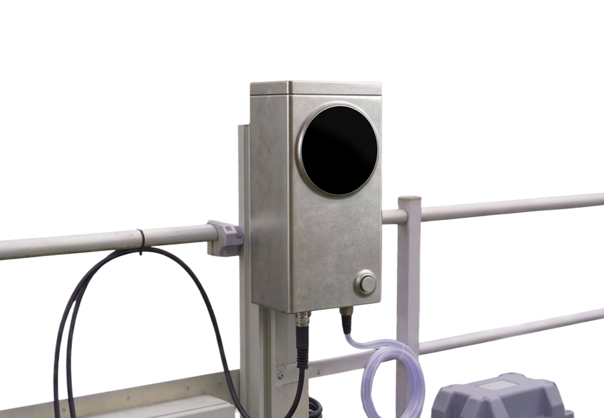
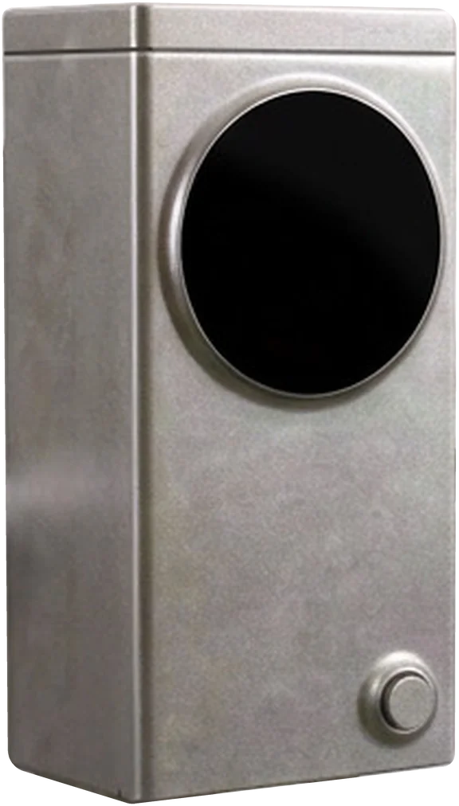
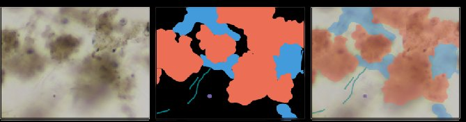

We use the same microscopy techniques you would use in a lab.
We collect more than 3000 images in the first month of a pilot.
We see changes in your treatment 48 hours before regular tabletop microscopy detects it.
Characteristics we look for:
Computer vision to analyse your biology

We sample once every hour, reports are produced daily.
One analysis takes 9 minutes.
We sample directly from your aeration lane and can analyze particles under 1 mm.